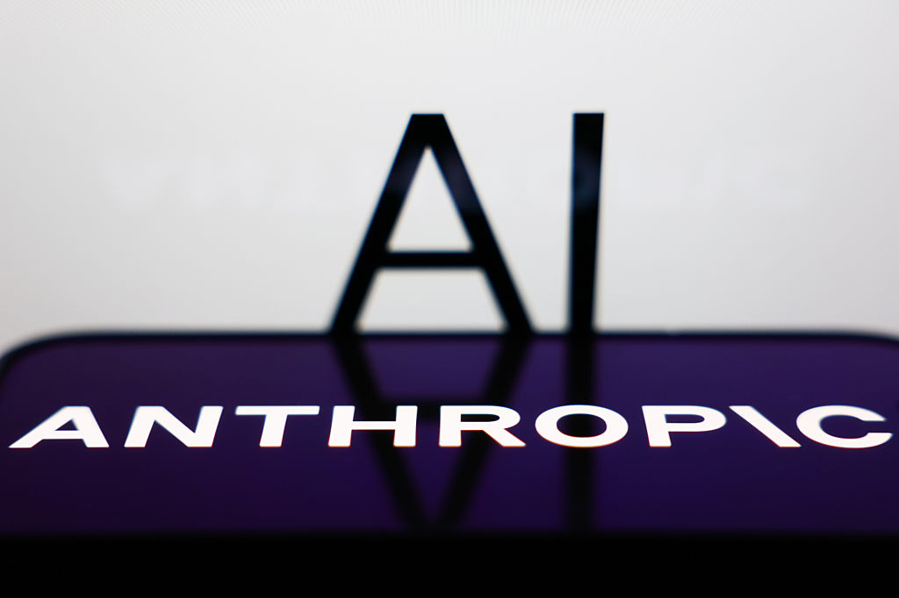

■ 说透 / SHUOTOU · 知览
SUBTITLE
累计投资近400亿美元，估值70倍收入。Google买的不是技术，是一张船票。

400亿美元，够买下整个Zoom还有余——这是Google给Anthropic的账单。加上最新这笔75亿美元，Google对Anthropic的累计投资已经逼近这个数字，这是AI行业有史以来最大的一笔单一公司投资。
但你注意，Anthropic的估值已经冲到615亿美元，可它去年一年的收入才8.75亿美元，你就算一下这个倍数，70倍，一家收入不到9亿的公司，值600多亿。
那问题来了，Google到底在买什么？
2023.09 — Google首轮投资Anthropic，20亿美元
2024.02 — 亚马逊投资40亿美元
2024.10 — Google追加50亿美元
2025.06 — Google再次追加75亿美元，累计近400亿美元
说白了，Google买的不是现在的Anthropic，买的是一张不让自己被OpenAI+微软联盟甩下车的船票。OpenAI背后站着微软，已经砸了130多亿美元，Azure云+OpenAI模型这套组合拳打得Google搜索广告都抖了三抖，Google在AI这局棋上，手里不能只有自己的Gemini，还得有另一张牌，Anthropic就是那张牌。
但Anthropic和Google的关系挺微妙的，一方面拿着Google的钱，另一方面Claude的CEO达里奥·阿莫迪去年还写了一篇长文，直接点名批评大科技公司的垄断——拿了老板的工资，转头在公司群里说老板管理有问题，这种关系能持续多久，说实话我也挺好奇的。
那Anthropic到底值不值这个价？
Claude在程序员圈子里口碑确实好，代码能力强，推理也稳，但它是不是比ChatGPT强很多，其实也没有，OpenAI的GPT-5今年要出来了，多模态、推理、代码，样样都在追。Anthropic的技术优势在安全对齐上走得更深，它家的Constitutional AI那套东西确实有自己的哲学，但普通用户在乎吗？不在乎，用户要的是好用、便宜、快。
「AI两强格局」的底层逻辑 OpenAI+微软 vs Anthropic+Google，这不是技术路线的竞争，是云厂商的代理人战争。微软需要OpenAI来卖Azure，Google需要Anthropic来对抗Azure+OpenAI。模型本身只是弹药，云才是战场。
Google投Anthropic的钱，大部分是以Google Cloud积分的形式给的，Anthropic必须用Google的云来训练模型，这跟微软投OpenAI是一个套路——钱给你，但云你得用我的，表面上是AI公司在打架，实际上是Google Cloud和Azure在抢客户。
其他玩家呢？Meta的Llama开源免费，亚马逊也有自己的模型，但看融资额就知道，大钱只流向了两边，2024年全球AI大模型领域的融资，超过60%进了OpenAI和Anthropic的口袋，剩下的几十家公司分那40%。AI行业的马太效应已经开始了，而且速度比想象的快。
但有个反向证据不能假装看不见——模型能力的差距在缩小。
2024年底到2025年初，开源模型的进步速度让所有人都意外，Meta的Llama 3在多项基准测试上已经接近了GPT-4的水平，而训练成本只有后者的1/10，中国的千问、DeepSeek也在快速追赶。
**模型护城河正在瓦解**
- 开源模型已达商用水平的80%，训练成本低几十倍
- Anthropic的回应是"我们做最安全的模型"
- 但"安全"能不能撑起600亿估值，市场还没给答案
这就是矛盾的地方，一方面Google拼命砸钱，生怕Anthropic掉队，另一方面，技术的民主化趋势又在削弱"大模型公司"的稀缺性。
那为什么Google还要投？
Google的核心业务是搜索广告，每年2000多亿美元的收入，AI搜索如果革了传统搜索的命，命根子就断了，所以它必须在AI上双线押注：自己的Gemini是主防线，Anthropic是副防线，哪怕Anthropic最后不赚钱，只要它能拖住OpenAI+微软的步伐，Google就赢了。
这就是大厂的投资逻辑——买的不是回报，是时间。
Anthropic的烧钱速度也值得注意，2024年收入8.75亿，但支出超过50亿美元，训练一次大模型光算力成本就几千万美元，预计到2027年才能实现收支平衡，未来两三年还得靠Google和亚马逊输血。
Google会停吗？不太可能，停了Anthropic就可能被微软收购，或者干脆倒闭，那Google在AI第二梯队的位置就空了，所以这不是投资，这是保护费。
一位硅谷VC合伙人说："不投OpenAI或Anthropic，就错过最大的机会。投了，估值又贵得离谱，回报周期完全算不过来。我们不是在投公司，是在投信仰。"
AI行业的投资已经从"看财务模型"变成了"看叙事能力"——谁的故事讲得好，谁就能拿到钱。
那AI两强格局真的定了？
从钱的角度看，是的，OpenAI+微软，Anthropic+Google，两边各据一方，其他玩家要么站队，要么在夹缝里找垂直场景。但从技术角度看，变数还很大，开源模型的冲击、监管政策的变化、算力成本的下降，任何一项都可能打破现在的平衡。
而且Google和Anthropic的关系本质上是不稳定的。Anthropic的创始团队从OpenAI出来，核心信念是AI安全，Google的核心信念是广告收入，如果有一天这两个目标冲突了，Anthropic会选择站哪边？
达里奥·阿莫迪去年那篇长文已经给了暗示——"如果大科技公司把AI用于有害目的，我们有责任说不"，这话是对所有金主说的，包括Google。
所以400亿美元买的不只是一家公司，买的是一场高风险政治博弈的入场券。
> Google买的不是技术，是一张船票。但风浪才刚刚开始。
· · ·
ZAYEN知览
说透 · SHUOTOU · 知览